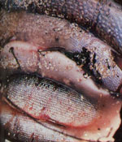
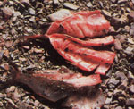
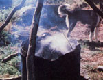
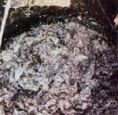
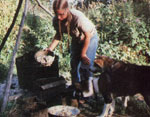
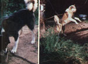

Feed Your Dogs For Free!
January/February 1981
Using her means of providing for an entire Alaskan husky sled team as an example, a reader explains how you can . . .
By Miki Collins
I don't think a homestead is really complete without a few animals roaming the place, but-as you probably know-the cost of maintaining pets or working critters can be prohibitive . . . especially for folks who live in rural areas where obtaining store-bought supplies requires expensive travel.
However, you can feed a canine crew economically and nutritiously . . . just as my sister Julie and I do, here on our isolated spread in the bush country of central Alaska. We were inspired to make our own dog food by the sheer expense of buying premixed dry feed. Including freight charges, a 50-pound bag of commercial dog food costs us a whopping $22, so we decided that we'd have to find some less expensive way of feeding our sled team of eight animals.
The basic ingredient of the low-cost dog dinners is fish. We catch plenty in the lake near our cabin . . . and you can feed your kennel of hounds from a similar source (or even, perhaps, buy large quantities of inexpensive "trash" fish from local commercial fisherfolk ).
During the summer, we use gill nets (such seines are illegal in many areas, so be sure to check local game laws before netting fish) to bring up an abundant harvest of whitefish, pike, burbot, and suckers each day. When winter arrives, of course, we first have to chop holes in the three-foot layer of ice that covers the lake-a tedious, tiring job-but the nets can then be left in the water for up to a week without any spoilage of the catch. If our haul is larger than the dogs' daily ration, we dry and store the extras for use during the spring and fall (when erratic ice movement makes netting unsafe).
A FINE KETTLE OF FISH
We usually cook the swimmers whole-heads, guts, scales, and all-to provide our dogs with hearty, wholesome meals. (We've noticed that the beasts do sometimes choke while eating, but never because they have bones caught in their throats . . . it's simply a result of their gulping the food too fast. If fish is cooked long enough, the skeletons become soft and easy to chew . . . posing little danger to canine gullets.)
A cereal supplement of rice or oatmeal can be used to fill out a skimpy netful . . . and will also add extra nutrients on those days when the animals have to work long hours and haul particularly heavy loads, or when the temperature is extremely cold. (Under such conditions, the huskies may need extra calories just to maintain their body weights . . . so it's sometimes necessary to mix a half-cup of lard, per animal, into the meal.)
We also add game birds and other small trapped or hunted animals to the kettle (as well as inexpensive meat trimmings that are sometimes available from the grocery store). Here in Alaska's interior, for example, the hare population fluctuates regularly . . . but we find we can usually snare several of the large rabbits a day during the peak season, and then stew up one hare (plus a little lard and oatmeal) for each dog.
Table scraps provide an additional wide range of possible ingredients for our homestead canines' dinner menu. We throw in such leftovers as old potatoes, stale bread, cold zucchini, moldy cheese, and carrot tops. The dogs even seem to enjoy the chickweed and lamb's-quarters that I occasionally add to the pot when the fish ration is getting scarce. (Remember, however, that dogs are not natural vegetarians . . . so plant matter-much of which the animals can't digest-should make up only a small part of their total diet.)
We cook our "canine fuel" in the sawedoff bottom half of a 55-gallon drum . . . which is hung from a wooden tripod over an open fire in the summer and set on top of our woodstove during the colder months. Once the food is in the pot, we pour in two or three gallons of water. (Whenever oatmeal or rice is included in the mix, however, it's a good idea to add more water than usual . . . and stir the stew often, since grains tend to stick to the kettle and-as a resultwill burn quite easily.)
When we're cooking outside, I build a large fire using driftwood found on the lake shore. As the flames grow under the pot, the homecooked hash comes to a boil, simmers for about half an hour . . . and then cools slowly while the fire burns down. (It's important, of course, to cook fish and game completely, in order to kill any parasites the critters might be car rying.) The food will be ready when the bones are soft, the meat crumbles easily into small chunks, and the whole mixture has a thick, mushy consistency.
DINNER IS SERVED
We feed our hardworking helpers once a day . . . and their dinner hour always results in quite a scene! Julie gathers the animals' pans, and I dish out the portions according to each eager eater's weight. After an active day on the trail, the dogs are always hungry . . . and their individual reactions to the sight and smell of a steaming pan of fish are highly predictable . . . and entertaining. Yukon-our big 100-pound malamute-joyfully hurls his bulk into the air when he sees dinner approaching. The smaller wolf/husky, Loki-who's always alert and high strung-whines and dances impatiently at the end of his chain, waiting with increasing anxiety until his pan is set down in front of him. Trapper, another greedy malamute, stands and stares intently at the pot . . . his eyes growing wider and wider until he's allowed to attack his share.
The general chorus of yelps and barks that always greets the arrival of loaded food dishes subsides into a steady slurping as the dogs consume their meal . . . and, finally, the yard is silent except for the contented lapping of tongues.
I'd bet that almost any dog-whether it's a husky, malamute, or just plain old garden-variety mutt-would thrive on a diet of fish, meat, and vegetable stew. The nutritious, wellbalanced combination is a great way to feed your tail-waggers economically . . . and the extra effort will be well rewarded as you see your crew dig eagerly into the tasty mush. As long as you can net or (inexpensively) buy fish in bulk quantities, you're in business . . . and so are the four-legged friends that pull your sled, herd your sheep, or just patrol your homestead acres!
EDITOR'S NOTE: You can learn more about the art of training and using an Alaskan dog team by reading "Homestead Dog Sledding" (MOTHER NO. 60, page 88). This back issue is available-for $3.00 plus $1.00 shipping and handling from THE Mother Earth News(restricted) P.O. Box 70, Hendersonville, North Carolina 28791.
|
 A fine mess of whitefish and pike?cooked whole?and a bit of oatmeal are ready to be transformed into a nutritious doggie dinner. |
 Julie Collins hauls in a whitefish from her gill net on Lake Minchumina, Alaska. The nets are dropped from a canoe daily during the summer. When winter arrives, the lake is covered with a three-foot layer of ice. But once fishing holes have been cut, the nets can be left in the water for up to a week without any spoilage of the catch |
 Surplus fish are cleaned, scored, and dried for future meals |
|
 A watchful husky assesses the stew's progress. The dog pot is the bottom half of a 55-gallon drum, suspended from a tripod over an open fire. |
 The bones are soft, the meat crumbles easily into small chunks, and the whole mixture has a thick, mushy consistency: Supper is ready! |
 The meal is dished out according to each animal's weight |
|
 Carried to the eagerly waiting dogs... Contented heads bow over the tasty, and very economical, feast |
|
|